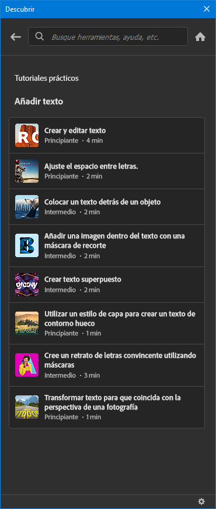

Manipulación digital
Unos apuntes del manejo de software raster.
📒 Sesión 01
En esta primera sesión vimos:
- Calendario
- Syllabus están en teams en archivos
- Firma de Syllabus vía forms, link en teams
- Contenido de Manipulación Digital del documento de Blackboard
Del programa a usar:
- Creative Cloud
- Photoshop
- Ayuda de Photoshop
- Menús
- Herramienta pincel, zoom
✎ En esta sesión usamos:
Desarrolla en blackboard la actividad de presentación
De BB
NO MÁS LOGOS EN WORD… Ni en PowerPoint.
LA IMAGEN DIGITAL - Conceptos y características
8 características de la imagen digital que debes conocer
Introducción a la fotografía digital
Entorno de Photoshop Sandoval dice en CS6
📒 Sesión 02
En esta sesion vimos
{kind=link}
Github para generar un portafolio digital
📖 Biblioteca Digital => teams / archivos / biblioteca digital
🌐 Portable apps y dos alternativas a PS: Krita y GIMP
✎ En esta sesión usamos:
Capas, Formas básicas, trazados, selección de color, selección de pincel y modificación de grosor
📒 Sesión 03
📷 Modelo
📷 Fotografias y video gratis Pexels
📷 Fotografias y video gratis Pixabay
📷 Fotografias y video gratis Freepik
📷 Fotografias y video gratis Unsplash
📷 Fotografias FreeImages
📒 Sesión 04
Trazo de líneas para separar elementos de la modelo.
Tutoriales de Photoshop los primeros 4 ejercicios.
De BB
Cómo crear un nuevo documento en Photoshop
TODAS LAS HERRAMIENTAS de Photoshop en 25 minutos!
COMO QUITAR FONDO en Photoshop con 2 métodos diferentes y de forma NO DESTRUCTIVA
Recorte perfecto de imagenes en Photoshop CC 2020 | Español
Rejuvenecer Rostro Tampon de Clonar, Pincel Corrector Photoshop CC #3
Cómo Suavizar la Piel en Photoshop ¡En 2 Minutos!
📒 Sesión 05
Desarrollo de la actividad 05 de BB.
En portable apps tenemos GIMP.
Si quieres bajar GIMP del sitio oficial esta aquí.
En esta sesión hicieron:
Manipulación digital con lo solicitado en la actividad de Blackboard
📒 Sesión 06
Akgunos promps usados en stable diffusion Robot girl, ultra high res, best quality, photo, 4k (hiperealistic:1.4), beautiful face, (beautiful eyes:1.2), (wearing mecha armor:1.2), perky breast, bra lift, breast slip, swept bang, voluptuous body, blondy
Ejercicios a desarrollar 16-09-23
📒 Sesión 06
📒 Sesión 07
primer parcial
📒 Sesión 08
BB foro de discusión
📒 Sesión 09
BB Edición de color
📒 Sesión 10
BB Foro de dicusión
📒 Sesión 11
BB Filtros, estilos y ajuste de capas 1/2
Nave espacial creado a partir de objetos cotidianos.
📒 Sesión 12
BB Filtros, estilos y ajuste de capas 2/2
retrato
📒 Sesión 13
Examen segundo parcial
📒 Sesión 14
BB Proyecto integrador 1/2 Actividad 11
📒 Sesión 15
BB Proyecto integrador 2/2 Actividad 11
📒 Sesión 16
BB Proyecto integrador 1/2 Actividad 12
📒 Sesión 17
BB Proyecto integrador 2/2 Actividad 12
📒 Sesión 18
Foro de discusión
📒 Sesión 19
Tercer parcial
📒 Sesión 20
Examen Final
📒 Recursos
Pantallazos de Photoshop y su explicación aquí
Pantallazos de GIMP y su explicación aquí.